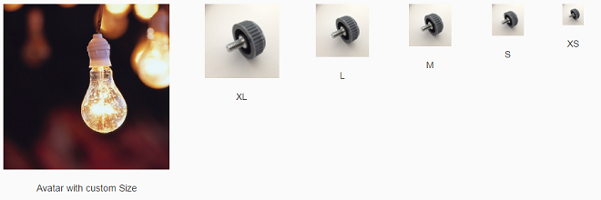
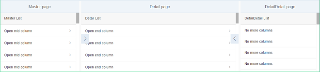
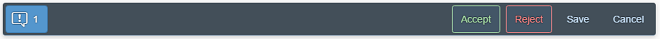
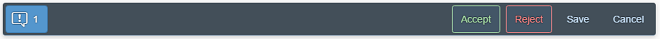
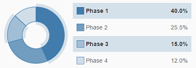
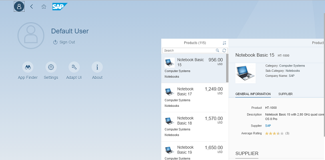
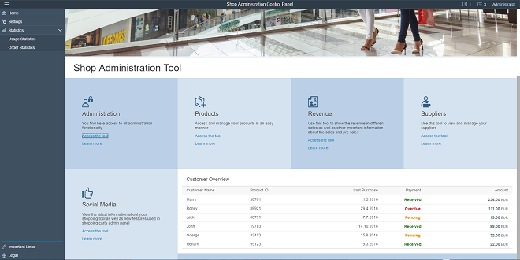

What's New in SAPUI5 1.46
With this release the UI development toolkit for HTML5 (SAPUI5) is upgraded from version 1.44 to 1.46.
-
sap.f.Avatar is an SAP Fiori 2.0 image-like control that has different display options for representing images, initials, and icons. It allows the usage of different content, shapes, and sizes depending on the use case.

There are several predefined sizes, as well as an option to set a custom size.
For more information, see the API Reference and the sample.
-
sap.f.FlexibleColumnLayout: This control represents the new SAP Fiori 2.0 base layout for an app. It implements the master-detail-detail paradigm by displaying up to three pages in separate columns. The columns are referred to as Begin, Mid, and End, and their width is variable depending on the current layout.
There are several possible layouts that can be changed with the control's API, and also by the user with navigation arrows.
For more information, see Building an App with the Flexible Column Layout and Related Classes, the API Reference, and the sample.
-
sap.f.semantic.SemanticPage: This new SAP Fiori 2.0 control represents an enhanced sap.f.DynamicPage that contains controls with semantic-specific meaning. You can set different actions using the available aggregations, and the sap.f.semantic.SemanticPage will automatically position them in dedicated sections of the title or the footer of the page, facilitating the implementation of the SAP Fiori 2.0 design guidelines.
 Different types of actions in the title positioned in a predefined orderDifferent types of actions in the footer’s right and left areas, positioned in a predefined order
Different types of actions in the title positioned in a predefined orderDifferent types of actions in the footer’s right and left areas, positioned in a predefined orderFor more information, see the API Reference and the sample.
-
sap.suite.ui.microchcart library: The following new, interactive charts are available and have been designed especially for analytical applications:
-
The sap.suite.ui.microchcart.InteractiveDonutChart control visualizes the data (only positive values) as segments of a donut and provides the corresponding details as a legend in the control. You can interact with both the legend and the donut for selection actions that are synchronized between the legend and the donut.
For more information, see the API Reference and the sample.
-
The sap.suite.ui.microchcart.InteractiveBarChart control visualizes the data as horizontal bars upon which the user can interact for actions based on the selection. The data can be displayed as a positive or negative value with a divider for separating these values.

For more information, see the API Reference and the sample.
-
The sap.suite.ui.microchcart.InteractiveLineChart control visualizes the data with connected points of a continuous set of dates or events with which the user can interact and trigger selection actions. The data can be displayed as a positive or negative value or both. The divider for separating these values changes respective to the values.

For more information, see the API Reference and the sample.
-
-
sap.ui.codeeditor.CodeEditor: You can use this control to visualize source code of various types, with syntax highlighting and line numbers, in edit and read-only mode, for example, in scenarios where you want the user to inspect and edit source code. The CodeEditor is a wrapper control for the open-source Ace code editor (see https://ace.c9.io
 ). For
more information, see the API Reference and the sample.
). For
more information, see the API Reference and the sample.
SAPUI5 OData V4 Model
-
Changing query options on sap.ui.model.odata.v4.ODataListBinding and sap.ui.model.odata.v4.ODataContextBinding
-
Requesting $count system query option on sap.ui.model.odata.v4.ODataListBinding
-
Accessing value lists
-
Forwarding the $search system query option
-
Branching from OData V4 model into metadata using the hash (#) character (see sap.ui.model.odata.v4.Context#getObject()) in template:with
Incompatibility Due to Bug Fix
The following bug has been reported: If you call the sap.ui.model.odata.v4.Context#getObject() or the sap.ui.model.odata.v4.Context#requestObject() methods without a parameter, the expected and documented behavior is that the same result is returned as if the parameter sPath="" had been specified. Due to the bug, however, the return value wraps the expected output that can then only be accessed via .value[0], for example oContext.getObject().value[0].
If you have used this workaround, your application will break starting with SAPUI5 version 1.44.7.
Solution: If your application needs to run with both the fixed and unfixed versions of SAPUI5, specify the sPath="" parameter, for sPath parameter. In both cases, you must not use the workaround with .value[0] any longer.
Due to the limited feature scope of this version of the SAPUI5 OData V4 model, check that all required features are in place before developing applications. Check the detailed documentation of the features, as certain parts of a feature may be missing. While we aim to be compatible with existing controls, some controls might not work due to small incompatibilities compared to sap.ui.model.odata.(v2.)ODataModel, or due to missing features in the model (such as tree binding). This also applies to Smart Controls (sap.ui.comp library) and SAP Fiori Elements that do not support the SAPUI5 OData V4 model, as well as controls such as TreeTable and AnalyticalTable, which are not supported together with the SAPUI5 OData V4 model. The interface for applications has been changed for easier and more efficient use of the model. For a summary of these changes, see Changes Compared to OData V2 Model.
For more information, see OData V4 Model, the API Reference, and the sample.
OData V2 Model
For OData V2 models, the V2 annotation sap:aggregation-role=”dimension” is now converted into V4 annotation "com.sap.vocabularies.Analytics.v1.Dimension" : { "Bool" : "true" }.
V2 annotation sap:aggregation-role="measure" is now converted into V4 annotation "com.sap.vocabularies.Analytics.v1.Measure" : { "Bool" : "true" }. For more information, see Meta Model for OData V2 and the API Reference.
One Page Acceptance Tests (OPA5)
The new LabelFor matcher checks if a given control is associated with the sap.m.Label control by their labelFor property. You can use it when searching by the text property or by the i18n key of the sap.m.Label control. For more information, see Cookbook for OPA5, the API Reference, and the sample.
UI Adaptation at Runtime (RTA): SAP Fiori 2.0 design
RTA with the SAP Fiori 2.0 design provides a fresh look and better user experience for key users when adapting the UI. For more information, see UI Adaptation at Runtime: Enable Your App.

-
sap.gantt:
-
Timeline Zooming with Mouse Wheel: When you hover the mouse over a specific location in the chart area, you can scroll the mouse wheel while holding the Ctrl + Shift keys to zoom in and out using the mouse pointer location as the zoom center.
-
Zoom Strategies Enhanced: The zoom strategies have been enhanced to allow for flexible zooming control. The interface includes a base class of AxisTimeStrategyBase and three default implementations. For more information, see the API Reference and the sample.
-
Automatic Scrolling: When you drag a shape near the border of the Gantt chart, the timeline automatically scrolls to follow the shape position. The scrolling works both horizontally and vertically.
-
-
sap.m.ComboBox:
-
The value state error message is now visible above all list items in the dropdown list of the sap.m.ComboBox. This improves the usability on mobile devices (tablets and phones).
-
When the ComboBox displays two columns (for example, key and value), you can search and filter for matching strings in both columns. This is enabled with the filterSecondaryValues property. For more information, see the API Reference and the sample.
-
-
sap.m.DatePicker: We have introduced a new navigate event. While navigating in the calendar popup of the sap.m.DatePicker, you can now receive an event containing the first and the last dates that are currently visible. You can use this information for lazy loading of special dates. For more information, see the API Reference.
-
sap.m.GenericTile: The new Actions scope property was added to provide an editing option for the GenericTile control when included on a Web page, for example, on the SAP Fiori launchpad. It is aligned explicitly with the interaction design of the SAP Fiori launchpad’s Edit mode. Both the sap.m.GenericTile and sap.m.SlideTile controls have been extended with this feature. You use the new scope property to switch the visual representation of the GenericTile or SlideTile on a Web page from the Display scope to the Actions scope. For more information, see the API Reference and the sample.
-
sap.m.Input and all inheriting controls now allow filtering and searching in two or more columns. Matching is done only on the initial character and the matching sequence is displayed in bold in the suggestion list.

For more information, see the sample.
-
sap.m.MessageBox can now hold and display formatted text (sap.m.FormattedText) and JSON content. This allows you to display message boxes with complex content. For more information, see the sample.
-
sap.m.MultiComboBox: The delay for text validation in the sap.m.MultiComboBox has been changed in order to react correctly to special inputs in non-Latin languages (for example, Chinese).
-
sap.m.MultiInput has been refactored to improve performance and accessibility. The tokenChange() event is deprecated and replaced with the new tokenUpdate(). For more information, see the API Reference.
-
sap.m.NotificationListItem and sap.m.NotificationListGroup: We have implemented several new features:
-
When the maximum number of notifications is reached, a message is shown on the bottom of the NotificationListGroup notifying the user about additional notifications that are hidden.

-
Action buttons have been moved from the footer of the NotificationListItem to the header to improve usability.

-
-
sap.m.PlanningCalendar: We have introduced a new rowHeaderClick event. You can now receive an event when a row header of the sap.m.PlanningCalendar is clicked. For more information, see the API Reference.
-
sap.m.QuickView and sap.m.QuickViewCard have a new parameter called navOrigin that improves the navigation when you use data binding. The new parameter is set in the navigate and afterNavigate events and holds a link to the originating card. For more information, see the API Reference.
-
sap.m.Slider and sap.m.RangeSlider can display labels for tick marks. The labels are defined and represented as a sap.m.ResponsiveScale, which is logically decoupled from the slider. For more information, see the API Reference and the sample.

-
sap.m.Table: Screen reader support for sap.m.Table has been improved. For more information, see the API Reference.
-
sap.m.UploadCollection: To add an item to the upload list, you can also use drag & drop on your desktop or tablet. This feature is available in both the Instant Upload and Upload Pending scenarios. For more information, see the API Reference and the sample.
-
sap.suite.ui.commons.Timeline:
-
With the new groupByType property, you can group timeline posts by a time period. This includes grouping posts by year, quarter, month, week, or day. You can also specify a custom grouping function using the setCustomGrouping method.
-
Using the lazyLoading property, you can set the timeline to load new posts automatically as the user scrolls along the timeline axis.
-
-
sap.ui.comp (smart controls): The samples in the Demo Kit have been enhanced for the SmartField, SmartLink , and FilterBar controls.
-
sap.ui.comp.smartfield.SmartField:
-
Numeric values for annotation sap:display-format or com.sap.vocabularies.Common.v1.IsDigitSequence (v4 annotation) are now displayed without leading zeros, if the annotation is of type string and sap:display-format="NonNegative".
-
Email, phone number, and URL annotations are now supported (com.sap.vocabularies.Communication.v1.IsEmailAddress, com.sap.vocabularies.Communication.v1.IsPhoneNumber, Org.OData.Core.V1.IsUrl). If you choose the relevant link for each of these annotations, it takes you directly to the required application , for example, the email application on your device for the email annotation.
-
com.sap.vocabularies.Common.v1.ValueListWithFixedValues is now supported (v4 annotation) and replaces the existing v2 annotation sap:value-list="fixed-values".
-
-
sap.ui.comp.SmartFilterBar: DateRangeType now allows for a more sophisticated handling of dates by providing a popover for the field with additional functions, such as a typeahead feature.

For more information, see the API Reference and the sample.
-
sap.ui.comp.SmartLink: You can now restore the previous state of a list of selected links under Define Links. For more information, see the API Reference and the sample.
-
sap.ui.comp.smarttable.SmartTable: You can now highlight items, for example to indicate an error. For more information, see the API Reference and the sample.
-
sap.ui.layout.form.Form: The samples in the Demo Kit have been improved.
-
sap.ui.table.*:
-
Keyboard navigation has been enhanced for Edit mode.
-
You can now define row-specific actions, such as navigation. The actions remain available on the right even when you scroll horizontally.
-
List Report and Object Page
-
Direct links from fields
Using the DataFieldWithIntentBasedNavigation annotation, fields can now link directly to a specific action of a semantic object instead of using the smart link popup. For more information, see Configuring External Navigation.
-
Navigation targets
Table toolbar actions for intent-based navigation are now displayed or hidden based on the availability of the navigation target on the current platform. For more information, see Enabling Actions in the List Report.
-
Navigation at row level
In grid and analytical tables, users can now navigate to the object page, at row level. The Show Detail button has been removed for these tables. For more information, see Smart Tables.
-
Performance optimization for side effects
Previously, if no side effect annotation was specified, the whole object page was refreshed upon a change. Now, if there is no side effect annotation, the page is not refreshed automatically. This system behavior optimizes performance. For backward compatibility reasons, you have to enable the new system behavior in the application descriptor. For more information, see Using the Global Side Effect.
Form actions
You can now add form actions to toolbars in object page facets. The following actions are supported:For more information, see Adding Action Buttons to Forms in Sections and Adding Custom Actions Using Extension Points.-
DateFieldForActions
-
DateFieldForIntentBasedNavigation
-
Custom actions using an extension point
-
-
Contact information
Quickviews with contact details can now also be displayed in forms and tables. For more information, see Form Facet.
-
Create and edit mode usability
In create and edit draft mode, subitem object pages contain an Apply action in the footer. This action concludes the current create or edit activity, saves the draft, and navigates one step up in the object hierarchy. For more information, see Draft Handling.
-
Tree table
You can now use tree tables in the list report page. Note that you can use this table type only in apps for ready-only scenarios. For more information, see Smart Tables.
Overview Pages (OVP)
-
Custom Breakout Filters
You can now use custom breakout filters to add custom filters of your choice. You can also define custom controls for implementing custom filters. For more information, see Configuring the Global Filter.
-
Passing Sorting Parameters from OVP to an SAP Fiori Elements App
You can now pass sort order parameters when you navigate from OVP to an external SAP Fiori elements application. For more information, see Configuring Sort Properties.
-
Link List Card Enhancement
The Link List card has been enhanced to align with other overview page cards. It now supports qualifiers in annotations and global filter usage for dynamic data. For more information, see Link List Cards.
-
UI Enhancements
-
Page loading error messages overlay the entire overview page and appear as a full page message.
-
The smart filter bar is aligned to match the width of cards.
-
The content area in list cards and bar chart list cards is now flexible and responsive.
-
The text area truncates based on the length of the values.
-
Support for Belize theme for overview page applications. Using the SAP UI theme designer you can customize your application styles.
-
You can now switch the Samples to the new High Contrast White theme from the Settings menu.
We reworked the landing page for the Demo Apps in the Demo Kit. It now features and highlights demo apps in multiple categories, and tests and related documentation chapters are now linked. Check it out at Demo Apps.
-
Browse Orders: A new master-detail app with features for browsing orders

-
RTA (FLP): UI Adaptation at Runtime (RTA) with SAP Fiori 2.0 design with SAP Fiori launchpad features
For more information, see UI Adaptation at Runtime: Enable Your App.
 -
Shop Administrator : The tool page demo app has been completely renovated and now showcases a shop administration scenario with controls from the sap.tnt, sap.ui.layout, and sap.suite.ui library.
